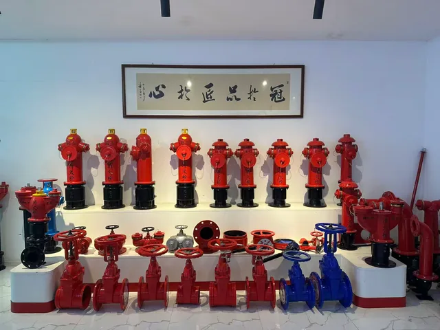
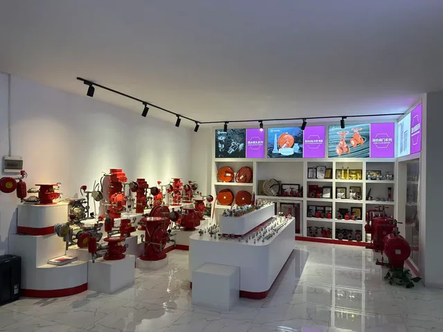
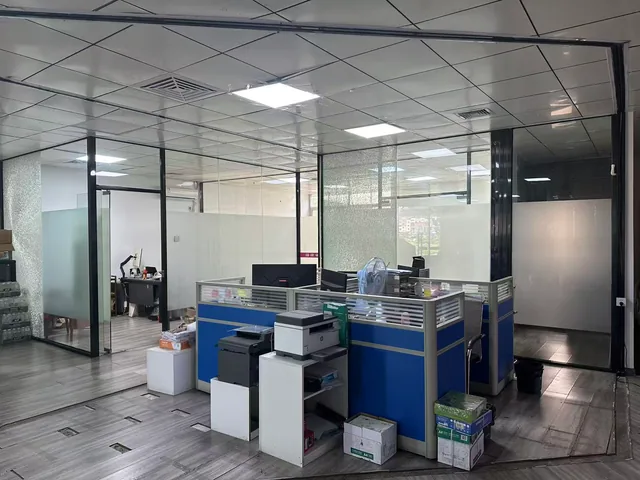
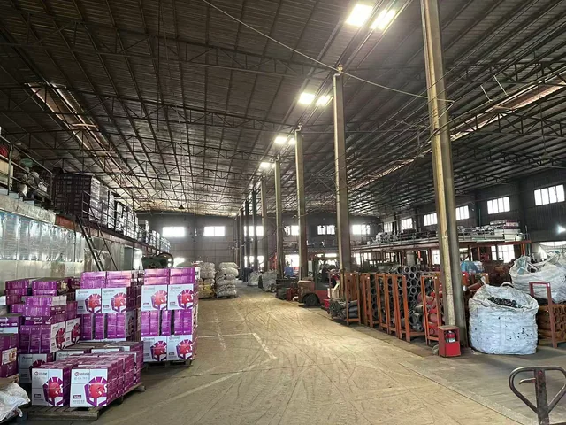
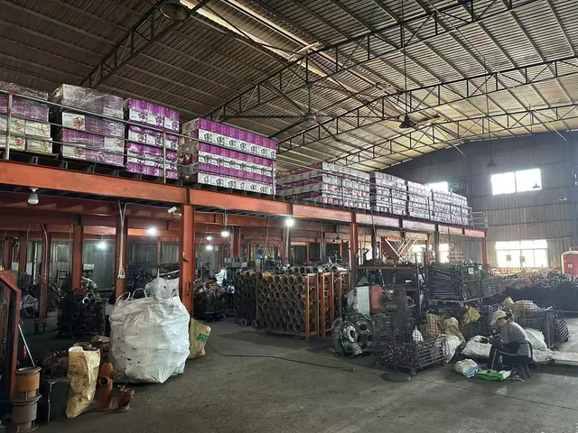
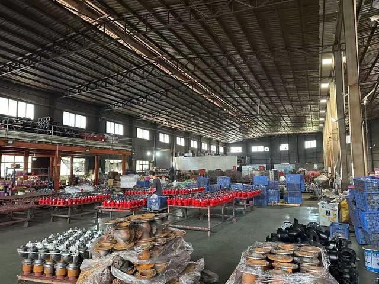
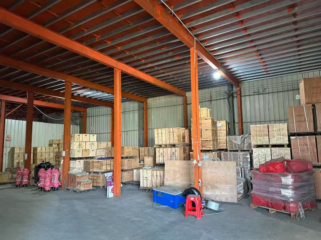
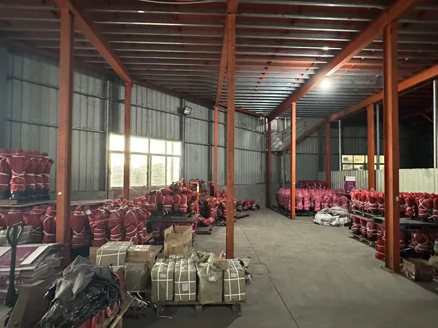

تشغيل المكونات
عمليات الورشة وتشغيل CNC لدعم إنتاج مكونات المنتجات المتفق عليها.
CHUANWEI FIRE
منتجات أنظمة مياه مكافحة الحريق للموزعين والشركات التجارية وعملاء العلامة الخاصة. استعرض المنتجات وبيئة العمل وخيارات OEM.
نعمل من نانآن، تشيوانتشو، فوجيان في الصين، ونصنّع ونورّد الرشاشات والصمامات وبكرات الخراطيم ومكونات أنظمة صنابير الحريق للموزعين والشركات التجارية وعملاء العلامة الخاصة.
أُنشئت مرافق الإنتاج في 2017 وتبلغ مساحتها 5,000 m²، مع معدات CNC لتشغيل المكونات.
استعرض الفئة المطلوبة لمقارنة الموديلات والتوصيلات والمواصفات.
معارض المنتجات والمكتب وورش الإنتاج ومناطق التخزين.
نماذج معروضة من صنابير الحريق والصمامات والرشاشات وبكرات الخراطيم.


مساحة المكتب لتنسيق المنتجات والطلبات اليومية.

صور للورش تُظهر المكونات ومناطق العمل والمنتجات أثناء الإنتاج.



مناطق تخزين الصناديق الخشبية والمنتجات المغلفة. تُحدد العبوة حسب المنتج والطلب.


يدعم التشغيل والإنتاج المجمع والتخزين تكوين المنتج المطلوب.
عمليات الورشة وتشغيل CNC لدعم إنتاج مكونات المنتجات المتفق عليها.
تنظيم إنتاج صنابير الحريق والصمامات ومكونات شبكات مياه الحريق.
فرز المنتجات وتجهيز العبوات وتنسيق الشحن حسب الطلب ومتطلبات النقل.
OEM / ODM
ناقش وسم المنتجات ولوحات البيانات وملصقات العبوات والتشطيبات وتركيبات الملحقات. أرسل رسماً أو عينة أو جدولاً فنياً لمراجعة متطلبات اللولب أو الفلنجة أو الطرف المحزّز والتوافق المطلوب.
ابدأ بالمنتج المطلوب. تُتفق المواصفات وترتيبات العينات وشروط الطلب لكل استفسار.
شارك اسم المنتج أو الموديل أو صورة. أضف المقاس والتوصيل والكمية والوجهة عند توفرها.
راجع التكوين المطلوب والوثائق المتاحة والسعر وترتيبات العينات. العينات مدفوعة.
اتفق على المواصفات والكمية والوسم والتعبئة وجدول التسليم قبل الإنتاج.
يُنفذ الإنتاج والتعبئة وفق الطلب المتفق عليه، وتُنسق تفاصيل الشحن مع المشتري.
العينات مدفوعة. تواصل معنا لمعرفة سعر العينة المطلوبة.
يُحدد الحد الأدنى لكمية الطلب بحسب المنتج. أرسل اسم المنتج أو الموديل لمعرفة الكمية المطلوبة.
أرسل اسم المنتج أو الموديل أو صورة أو رسماً لبدء التواصل.
راجع الرسالة وأرسلها في WhatsApp أو تطبيق البريد.